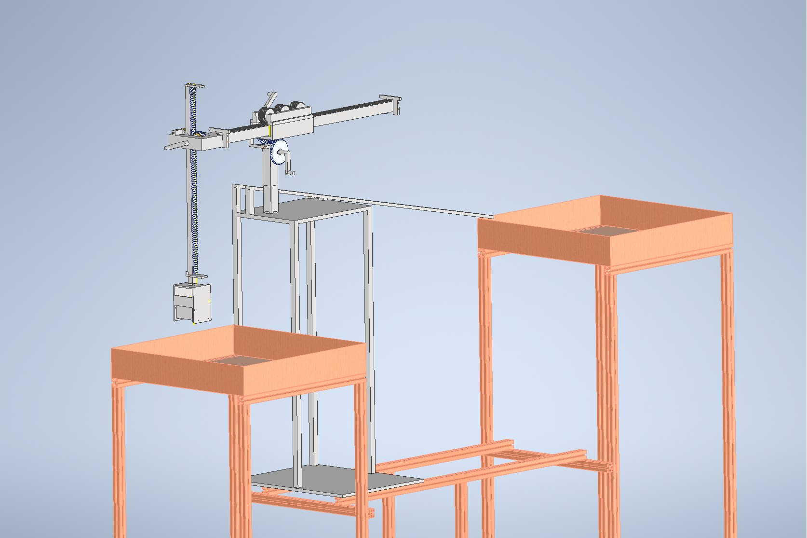
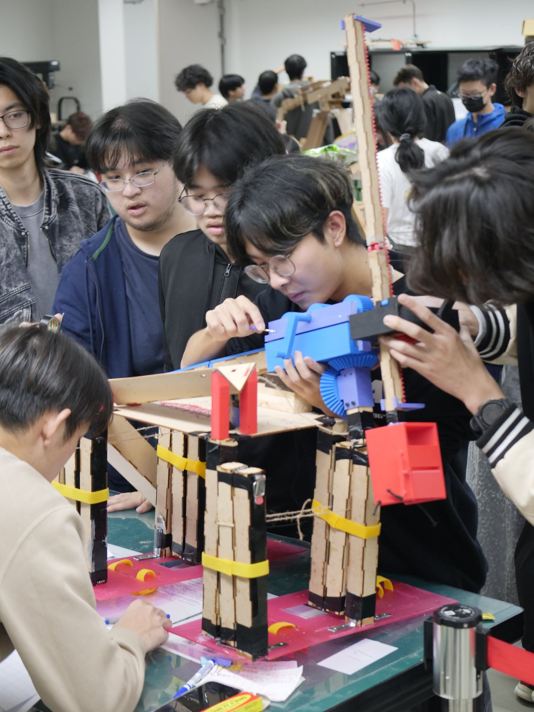
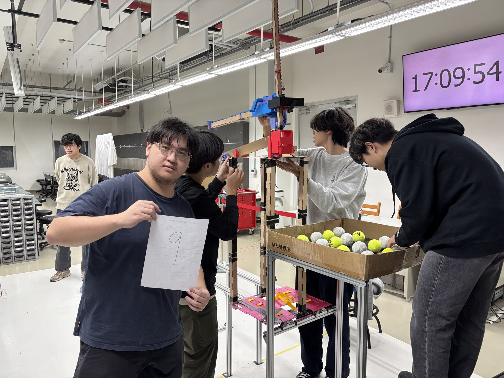

Case Study | Deployable Mechanism
Foldable Ball Transfer Mechanism
Led a compact-to-deployed mechanism build, balancing packaging, reliable motion, and fabrication constraints.
Treated packaging as the main engineering problem.
The mechanism had to pick up, transport, and release a ball while staying inside a fixed envelope. I treated size limits, folding, deployment motion, lock-up stiffness, and repair access as primary design requirements rather than details to solve later.
This shifted the project from simply making a transfer path to designing a compact machine that could repeatedly move from storage state to working state.

Used simple hardware to improve reliability.
Early folding concepts were not dependable enough. I matched MDF, 3D-printed parts, hinges, latch hardware, and assembly order to the tools we had, then adapted that hardware into a clearer folding module with a more predictable motion path and more stable locked state.
Fold motion
Moved smoothly from compact storage to working configuration.
Locked stiffness
Reduced unwanted movement during ball transfer.
Fabrication
Used accessible materials to speed repair and iteration.

Balanced ideal motion with buildable mechanics.
The final design emphasized practical reliability over unnecessary complexity. It performed dependably in final evaluation and strengthened my ability to connect mechanism architecture with fabrication, assembly order, and test behavior.
- Packaging constraints can dominate mechanism architecture.
- Off-the-shelf hardware can solve serious design problems when used carefully.
- Repair access and assembly order directly affect final reliability.

Full final test video
Engineering flow
Made storage size and deployment requirements drive the mechanism architecture.
Compared folding paths, lock-up behavior, fabrication speed, and repair access.
Used hinges and latch hardware to create a clearer motion and locked state.
Iterated toward a final mechanism that deployed and transferred reliably.
Technical decision table
| Constraint | Decision | Why it mattered | Skill demonstrated |
|---|---|---|---|
| Strict compact storage size | Made folding architecture central to concept selection | Prevented a working transfer path from becoming impossible to package | Design for constraints |
| Deployment had to be repeatable | Adapted hinge and latch hardware into the mechanism | Improved motion predictability and locked-state stiffness | Practical mechanism design |
| Final reliability depended on fabrication quality | Used accessible materials and repair-friendly assembly choices | Made iteration faster and reduced final-test fragility | Fabrication-aware engineering |
Reviewer takeaway
This project demonstrates engineering judgment in a less glamorous but very important area: making mechanisms fit, deploy, lock, and survive real fabrication constraints. That judgment transfers directly to robot hardware design, where packaging and serviceability often decide whether a system can be tested enough to improve.